A Self-Guided Tour App for Everyone.
2 min read
Project In a Glance
Problem
Visitors lack knowledge about architectural history of the campus and their need to tour around the campus effectively is unsatisfied.
Solution
We designed a self-touring app that provide informative content, tour customization, and high accessiblility to increase familiarity and engagement with UC San Diego’s campus’ architectural landmarks.
Impact
Launched July 2020 on Google Play Store. Officially endorsed by UC San Diego and San Diego Architecture Foundation (SDAF), Xplore will be accepted as the official app for visiting UC San Diego.
Our Process
Our design process follows the Double Diamond Model of Design Thinking, aiming to narrow down to the right problem before finding the right solution.
My Role
• User research and competitive audits
• Sketch/Figma for low/hi-fidelity mockups
• Hosting cross-functional design critiques
• Andriod/Accessibility User testing
• Engineering handoff
Collaborators
• 1 other Product Designer
• 1 Product Manager
• 7 Engineering guru
Explore Problem & Empathize
I researched using a combination of 5 methods to gather qualitative context and quantitative data on the problem domain and build empathy.
1. Communicate need from stakeholders
2. Survey data to discern pattern
3. Field Study - Taking school tours
4. UCSD current Triton Tour Guide 1:1 s
5. Comparative Analysis
Business Goal raised by stakeholders
We partnered with San Diego Architecture Foundation, a non-profit organization
dedicated to promoting and educating architecture and urban design of San Diego. SDAF built many UCSD’s architectures and challenges us to increase people's interest to learn about architectural history.
Another stakeholder is UC San Diego, with a main goal in attracting more tourists, prospective students, and alumni to tour around campus and celebrating UCSD history.
Pattern discerned from Survey Data & Affinity Diagram
4.35% would choose current school tours as an option.
60.87% “strongly interested” to discover more about UCSD
58.7% participants chose “2-4 hours ( ~half a day )” as preferred touring time.
However, the current official school tour (Triton Tour), which only provide tours for around 1 hour with fixed route. Visitors tend not be able to fully satisfied and had to wander around to kill time even if they attended.
For qualitative survey data, we created an affinity-diagram to turn raw data into meaningful groups that are easy to identify patterns.
Field Study:Pretend to be "Tourists" & observe the real ones
We personally signed up for the official school tours(Triton Tour), walked along side with prospective students,their parents, and local visitors to observe their real reactions in natural settings and interactions with human tour guide.
The observations boiled down to 4 key insights (listed aside), which better informed our later solution.
Human Triton Tour Leader 1:1s
We interviewed current student tour leaders to know the other side of the touring experience, wishing to know how the tour works and what was some flaws leaders themselves noticed. Can training truely eliminate Human factor bias?
Current Solutions are NOT enough:Comparative Analysis
Our team compared across other 4 competitors. (Figure 1) There is currently NO All-around solution in this problem domain. We found out noticable missing opportunities that haven't been addressed in aspect of informativeness, Customizability, and Accessibility.
Specifically, Triton Tour (Figure 2) is not customizable enough since they have lots of innate constraints and human knowledge bias as listed in CON;
Self-guided pdf (Figure 3) is not accessible enough since it fails to be color-blind freindly;
And all solutions is not informative enough to educate visitors about the architectural history in UCSD.
Narrow Down & Define:
3 Design Metrics
“Boiling things down to ‘the most fundamental truths’and then reasoning up from there.”
— First Principle
Informativeness
Xplroe provided multimedia information to enrich content. Besides audio guides by the recruited student tour guides to recreate the personal experience of physical tours, we also adds video and detailed architectural history to better inform users.
Customizability
We acknowledged that visitors have varied time constraints, interests, and goals to tour UCSD. Thus we pioritized the feature to customize your own tour.
Accessibility
Xplore practiced inclusive design since our users span all ages, physical and cognitive abilities. Thus, we aim to make designs compliant with WCAG 2.1 guidelines and tested under undesired conditions where situational disability happens.
Diverge & Ideate
Understanding Target Users
Why we think Persona is NOT enough
At first, we made detailed personas of 3 user types of
tourists, prospective students, and alumni.
However, traditional personas classified by identify can’t tell the whole story,
since they're static and restricted by such generalization.
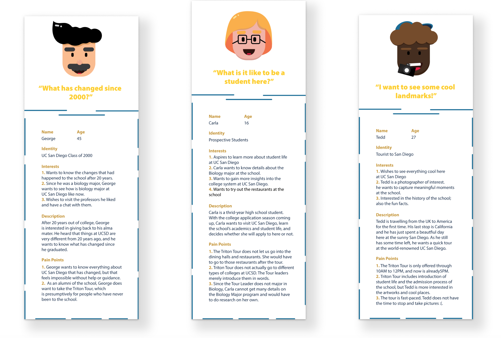
What's better way?
What actually drives user behaviors and differs user type?
It's the dynamic and interchangeable nature of users’ state of mind throughout the whole user journey.
A natural, fruitful exploring experience stems from a dialectical relationship between Foraging and the Wanderer state.
As we understand such dynamic, we hope our app will not only support it
but also promote constant interchanging between the two sides of the spectrum.
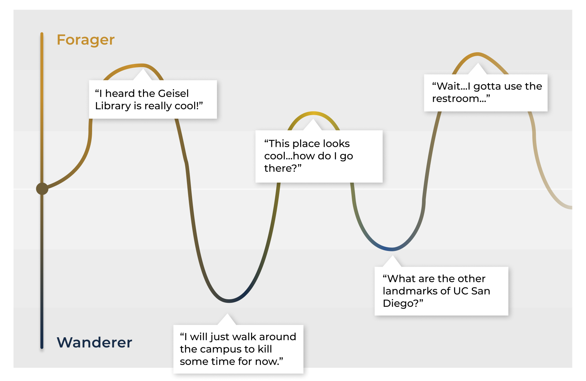
Iterative Design Process
User Flow & Sketches

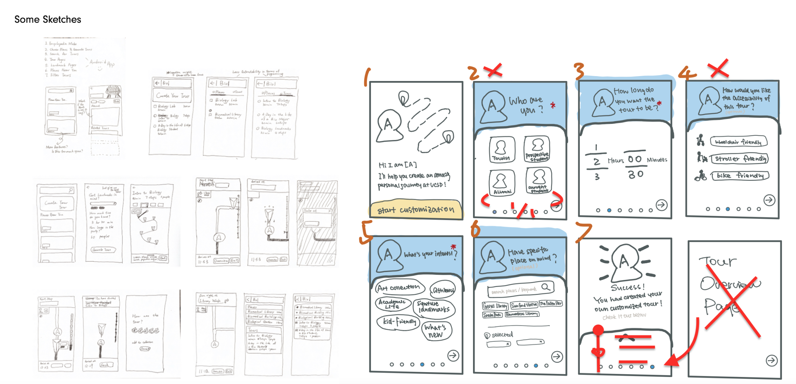
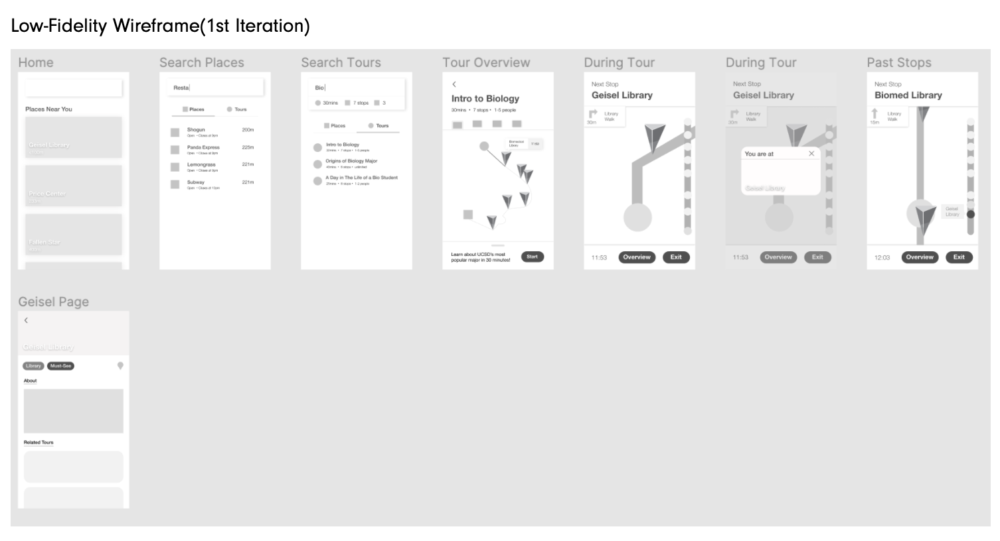
Iteration towards Informativeness:
Information Architecture
To achieve the design metrix of informativeness effectively, we want users, whose attention & cognitive capcity is limited, to better absorb the information presented on Place Detail Page, instead of suffer cognition overload by packed text. ( Situational Cognitive Disability )
We conducted Preference Test to make sure a good Information Architecture,
present 3 versions of different layouts of the Place Detailed Page and ask for preferences.
Why Preference Test?
* Due to quarantine, can only conduct remote testing ( can’t do physical card sorting )
* A quick-and-dirty way to gather user’s intuitions towards the app’s information architecture

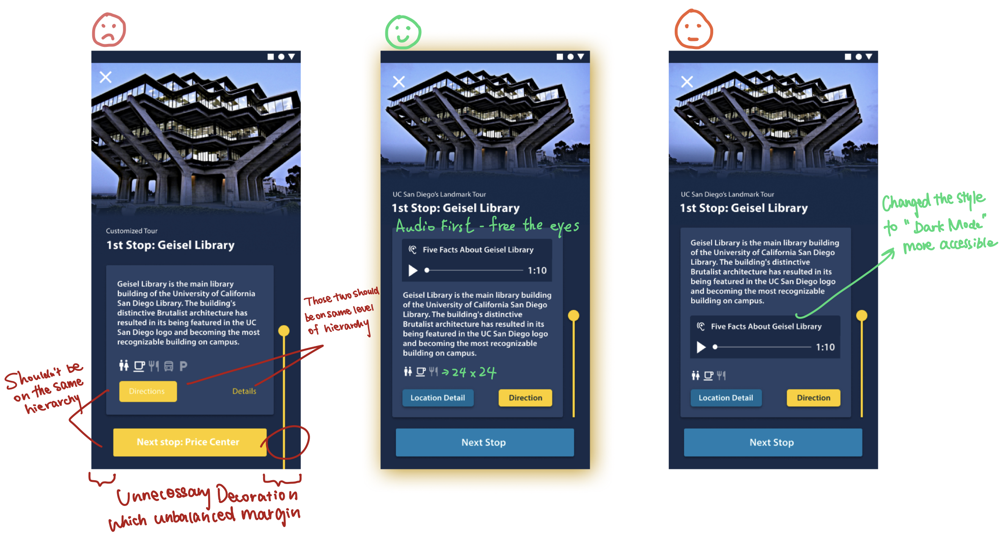
Iteration towards Accessibility:
App for EVERYONE
To achieve the metrix of Accessibility & Inclusivity,
we ensured 100% of its color contrast issues to pass WCAG Level AA and AAA by 1st MVP Release.
Also I checked color blind friendliness, such as tritanopia (red/green), deuteranomaly (green weak), tritanopia (blue/yellow) etc. to give equal access to information to EVERYONE.
Inclusive design = Magnifier of usability problem
I consider not only permanent disability, but also temporary disability, and situational disability.
As a tour app, there are user scenarios where tourists use the app outdoors under the bright California sunlight (situational blindness), and try to interact with the mobile screen on the move / on a bumpy shuttle where users’ finger motion is less accurate which leads to mis-operation ( situational touch impairment ). Thus, I used automated tools like Funkify Disability Simulator to test the readability under simulated strong sunlight, and trembling focus point to test if the CTA buttons are big enough.
Iteration towards Customizability:
How to encourage usage of “Tour Customization” feature?
We wish to iterate to improve user experience of “tour customization” feature by mitigating interaction cost ( users take the time & energy to configure ) that could dampen their desire to input their priorities and set preferences.
* Simplify the workflow and Minimize the amount of input required
* Choosing from options over tying ( recognition over recall )
* Created an avatar to humanize the process and lead throughout the flow.
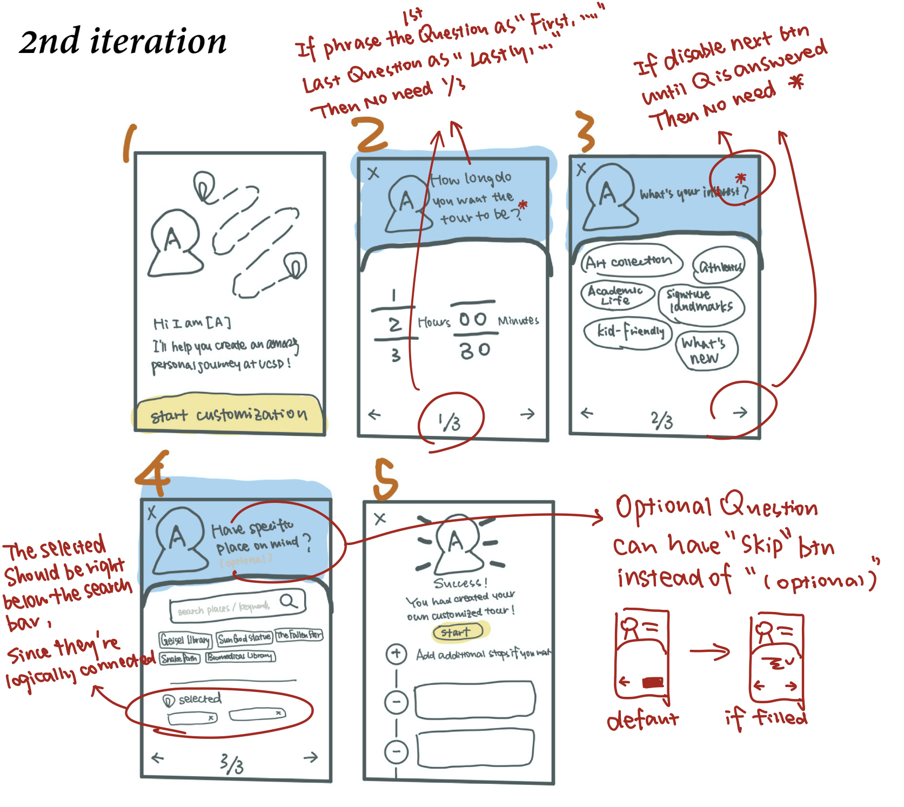
Microsoft Desirability Toolkit
Also, we believe users’ positive impression of the app’s mood adds chance to try out customization feature.
To test whether it’s welcoming & upbeat, we showed the UI and asked participants to select top 3 adjectives that best describe the app’s mood from a list provide by toolkit.
The recommended wordlist was slightly modified: “Cutting-edge” was replaced with “UC San Diego vibe”.
High-Fi Screens &
User Flow
Onboarding:
providing greetings, key info, and boost confident engagement within the first interaction
During pre-set tour:
immersive audio first experience on accessible dark mode UI
We considered that the during tour feature would be always used on the move outside under strong sunlight, thus dark mode is more accessible and increases readability.

Informative detail page & search function with amenities shortcut
Want to learn more about a place but don’t feel like be on a tour? We recruited official Triton Tour student guide to record audio introduction for each site to re-create the intimate experience aside from multimedia content.
Tour Customize:
Tailor towards personalized needs and constraints
Design System
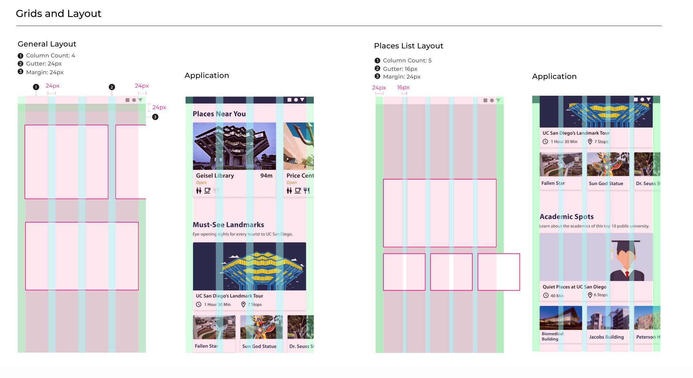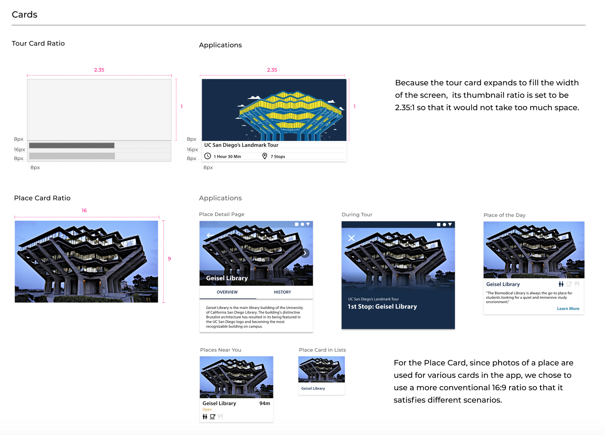
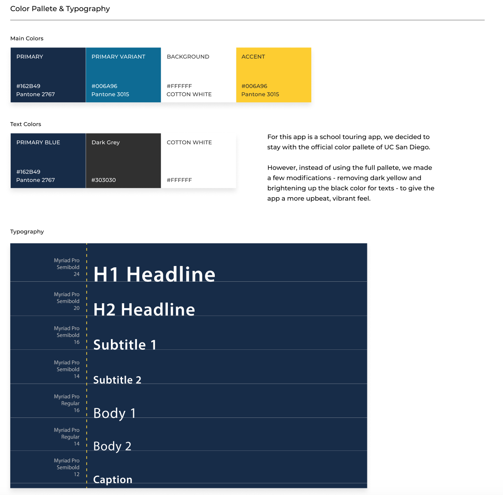
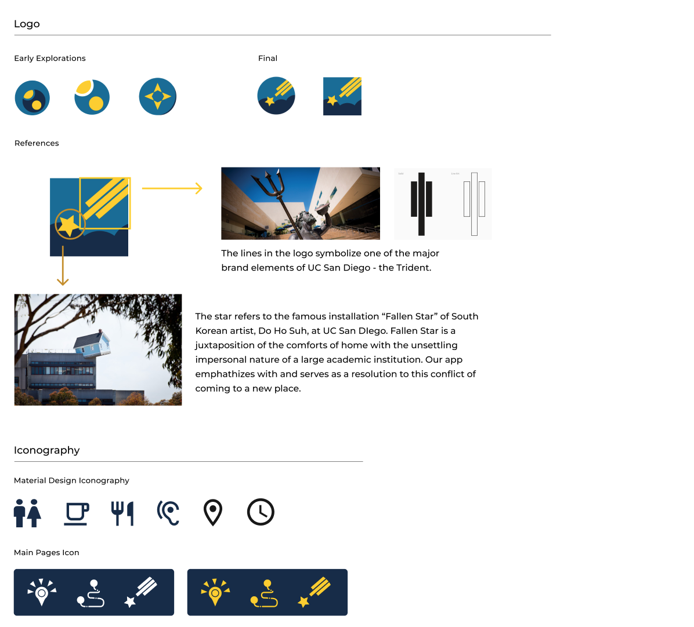
Business Model & Future:
"LEGO" style tour app
Short-term: 1st release by the end of June 2020 on Google Play store. Finished
Mid-term: iOS version release on App Store
Long-term: Our modularized design and scalable code made it possible to scale to other univerticies & cities as an open source software.

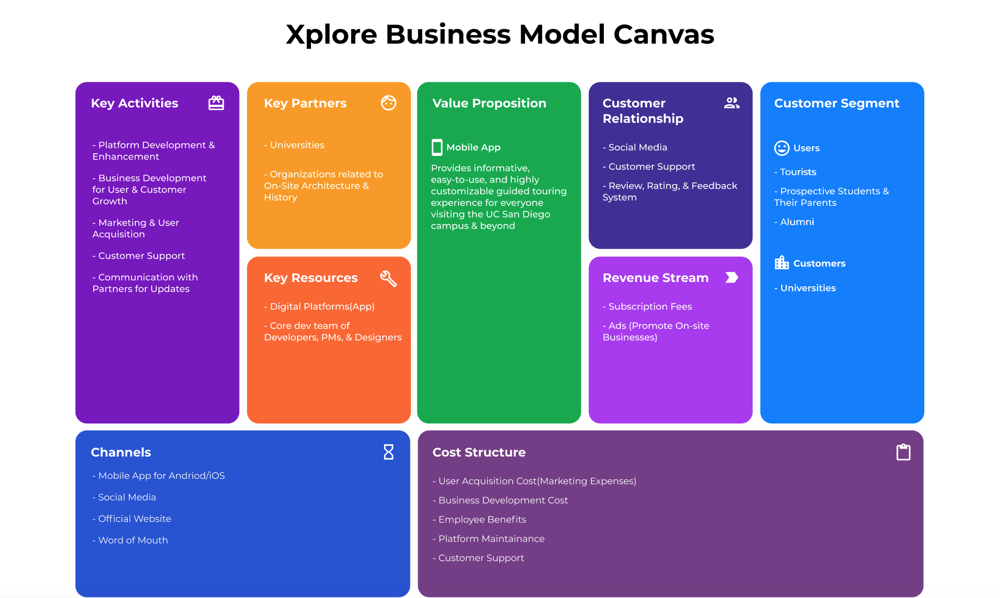